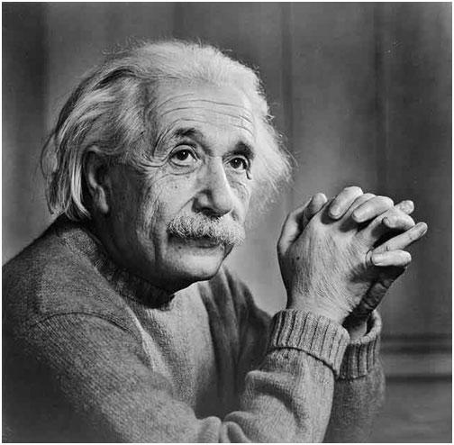
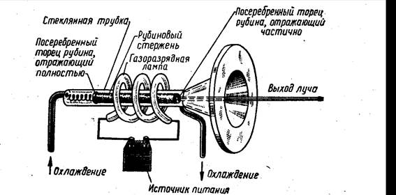
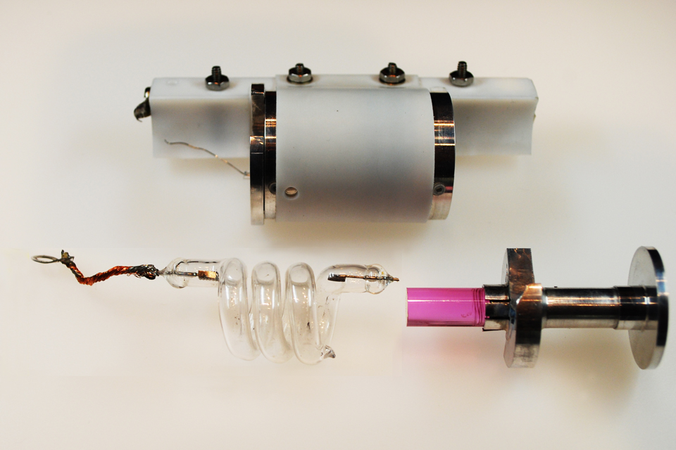
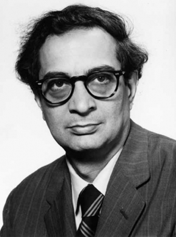
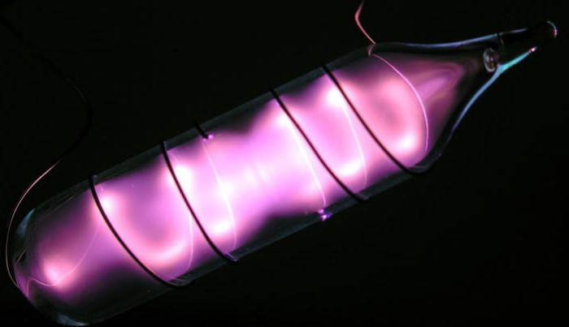

Одним з найбільш значущих винаходів минулого століття можна вважати винахід лазера, який зараз використовується практично у всіх сферах життя. Слово LASER утворилося від скорочення англійського словосполучення «light amplification by stimulated emission of radiation» – «посилення світла за допомогою вимушеного випромінювання»

Ще в 1916 році Альбертом Ейнштейном була спрогнозована можливість переходу атомів з вищого енергетичного стану в нижчу при зовнішньому впливі. При цьому переході звільняється деяка кількість енергії, і таке випромінювання називається вимушеним. Вимушене випромінювання і лежить в основі роботи лазерів.
Вимушене випромінювання було пояснено з точки зору квантової теорії Ейнштейном, а перше втілення цього принципу в залізі почалося в 50-х роках ХХ століття незалежно різними групами вчених, найбільш відомими з яких стали Ч. Таунс, А. М. Прохоров і Н. Г. Басов. Тоді їм вдалося побудувати перший квантовий генератор - мазер, який генерував випромінювання в області сантиметрових хвиль. Нескореним на той час залишався оптичний діапазон, і про те, як його вдалося підкорити я і спробую розповісти.

А підкорити його вдалося Теодору Мейманом в 1960м році. Він провів безліч розрахунків і прийшов до висновку, що ідеальним робочим тілом для генерації хвиль оптичного діапазону стане кристал рубіна. Він же запропонував принцип накачування робочого тіла - короткими спалахами світла від відповідної лампи-спалаху і спосіб створення позитивного зворотного зв'язку для того щоб підсилювач став генератором - цю функцію виконували дзеркальні покриття на торцях кристала. Розрахунки Меймана показали, що атоми хрому, які є домішкою в кристалах сапфіру і роблять його рубіном мають відповідну систему енергетичних рівнів, яка робить можливою генерацію лазерного випромінювання.
Деталі лазера крупним планом:

Перший газовий лазер був створений в США в 1960 А. Джаванном. Існуючі газові лазери працюють в дуже широкому діапазоні довжин хвиль - від ультрафіолетового випромінювання до далекого інфрачервоного випромінювання - як в імпульсному, так і в безперервному режимі.

Зовнішній вигляд газового лазера:
